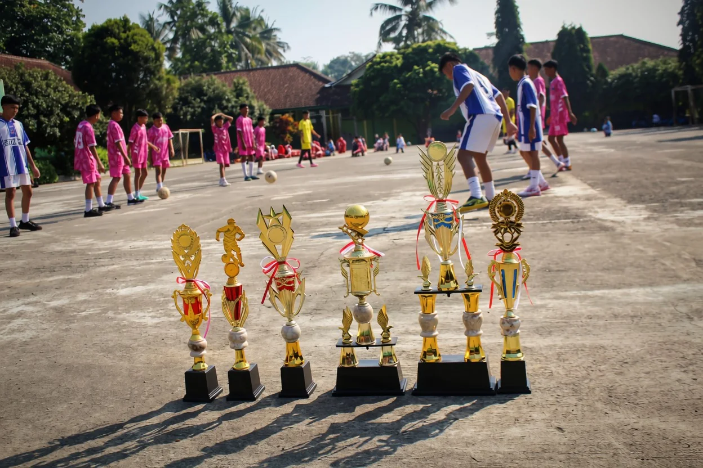
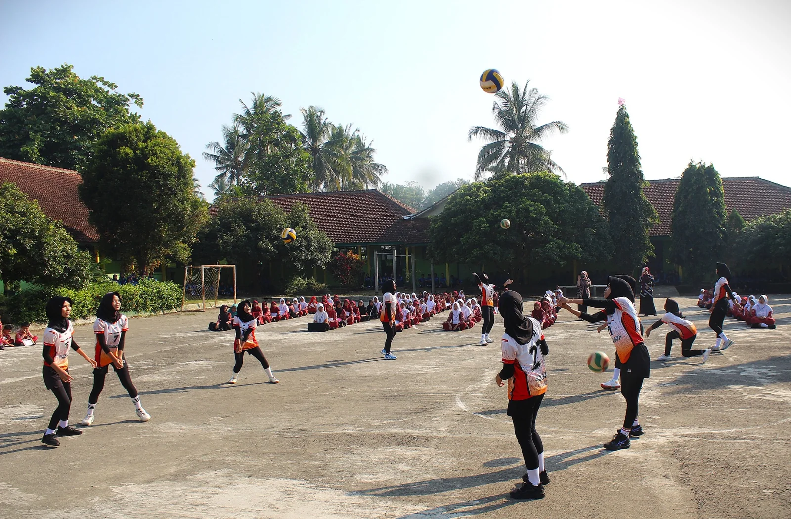
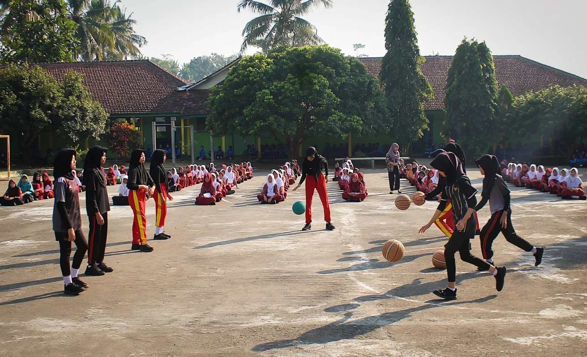
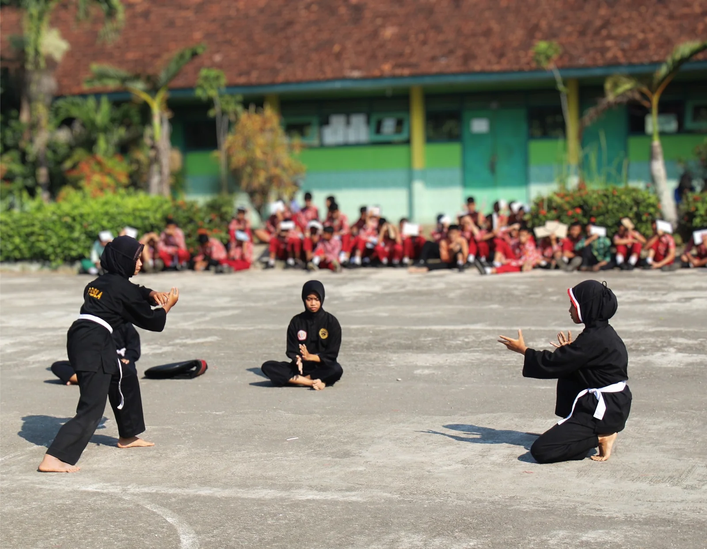
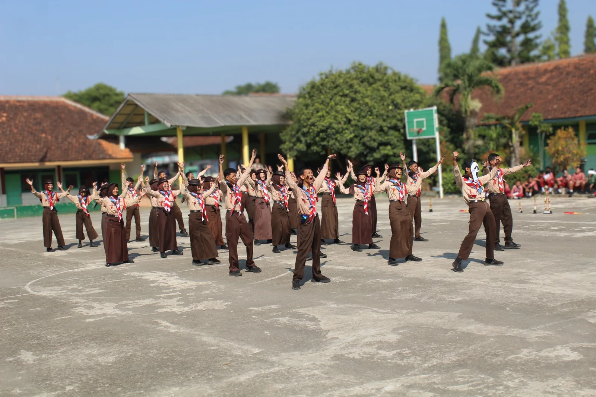

Pameran Pendidikan & Prestasi Siswa
Talenta Tumbuh,
Prestasi Bersinar.
Jelajahi semangat siswa SMP Negeri 25 Purworejo melalui kegiatan ekstrakurikuler yang aktif, sportif, kreatif, dan berkarakter.
18Ekstrakurikuler
JUARAKarakter utama
25Identitas sekolah
PURWOREJO
Belajar tidak hanya di kelas.
Lapangan menjadi ruang tumbuh untuk disiplin, kerja sama, keberanian, dan sportivitas.
GULIR UNTUK MENJELAJAHI ↓
01 — SEMANGAT SISWA
Setiap kegiatan adalah
panggung untuk berkembang.
Pameran ini menghadirkan dokumentasi dan daftar lengkap 18 ekstrakurikuler SMP Negeri 25 Purworejo. Dari olahraga, seni, hingga wawasan kebangsaan, setiap kegiatan menjadi wadah untuk mengasah bakat, membangun karakter, dan meraih prestasi.
02 — EKSTRAKURIKULER
18 pilihan untuk
menemukan potensimu.
Pilih bidang yang sesuai minatmu. Setiap ekstrakurikuler dirancang sebagai ruang untuk belajar, berkarya, bekerja sama, dan berprestasi.




06Olahraga
Futsal
Kecepatan, teknik, kerja sama, dan sportivitas dalam permainan tim.
07Olahraga
Atletik
Mengembangkan kekuatan, kecepatan, kelincahan, dan daya tahan.
08Olahraga
Olahraga Prestasi Lainnya
Ruang bagi siswa untuk mengembangkan potensi olahraga sesuai bakat dan prestasinya.
09Seni
Tari
Mengembangkan ekspresi, kreativitas, keluwesan, dan apresiasi budaya.
10Seni
Karawitan
Menumbuhkan kecintaan terhadap seni musik tradisional dan budaya Jawa.
11Seni
Paduan Suara
Melatih olah vokal, kekompakan, percaya diri, dan kepekaan musikal.
12Seni
Melukis / Kaligrafi
Menyalurkan kreativitas melalui karya visual, seni, dan keindahan tulisan.
13Seni
Sinematografi
Belajar bercerita melalui kamera, visual, kreativitas, dan produksi karya.
14Seni
English Club
Meningkatkan kemampuan berbahasa Inggris melalui komunikasi yang aktif dan menyenangkan.
15Seni
Bergodo
Menguatkan kekompakan, disiplin, penampilan, dan pelestarian budaya.
16Kebangsaan
Paskibra
Pasukan Pengibar Bendera yang membentuk disiplin, tanggung jawab, dan cinta tanah air.
17Kebangsaan
PMR
Palang Merah Remaja yang menumbuhkan kepedulian, kesiapsiagaan, dan jiwa kemanusiaan.
18Kebangsaan
KIR
Kelompok Ilmiah Remaja untuk melatih rasa ingin tahu, penelitian, dan berpikir kreatif.
18 kegiatan • 3 bidang • 1 tujuanMemberi ruang bagi setiap siswa untuk tumbuh sesuai minat, bakat, dan potensinya.
JUARA
SMP NEGERI 25 PURWOREJO
03 — NILAI SEKOLAH
JUARA bukan sekadar slogan.
Ini cara kami bertumbuh.
Nilai JUARA menjadi semangat untuk menghadirkan lingkungan belajar yang berkarakter, aktif, hangat, dan siap meraih prestasi.
JJujur — berkata dan bertindak dengan integritas.
UUnggul — terus berkembang dan memberikan yang terbaik.
AAktif — berani terlibat, mencoba, dan berkarya.
RRamah — saling menghargai dan menciptakan suasana positif.
ABerbudaya — menjaga nilai, tradisi, dan lingkungan.
04 — GALERI
Jejak kegiatan
yang penuh energi.
Kumpulan foto kegiatan yang Anda kirimkan untuk materi pameran.
05 — DATANG & KENALI
Satu sekolah.
Banyak potensi.
Kenali lebih dekat kegiatan siswa SMP Negeri 25 Purworejo dan temukan ruang untuk bertumbuh bersama.
06 — INFORMASI SEKOLAH
SMP Negeri 25
Purworejo
Tempat belajar, berkarya, berprestasi, dan membangun karakter.
⌖